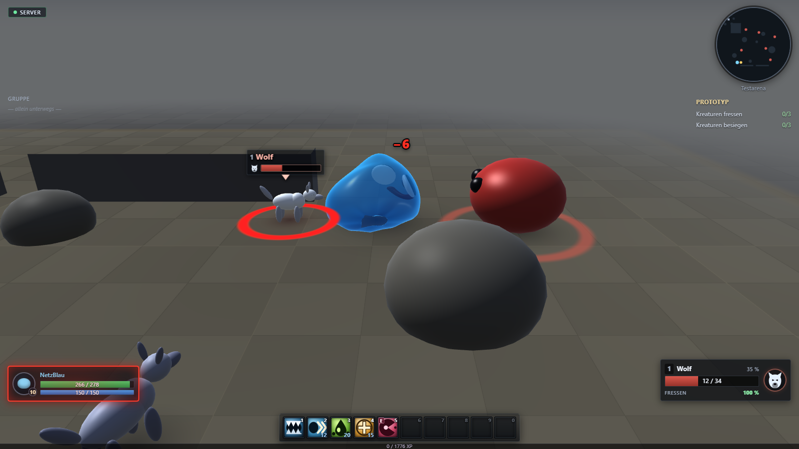
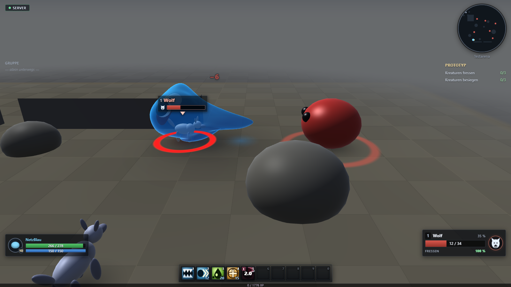
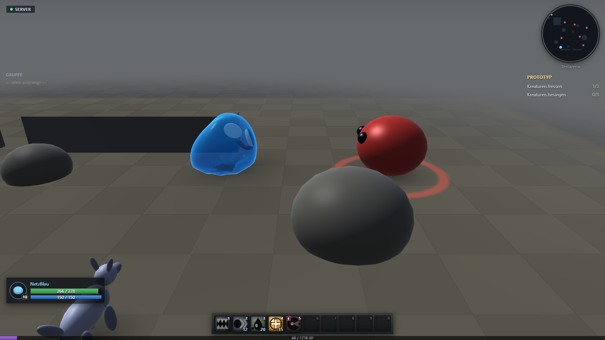
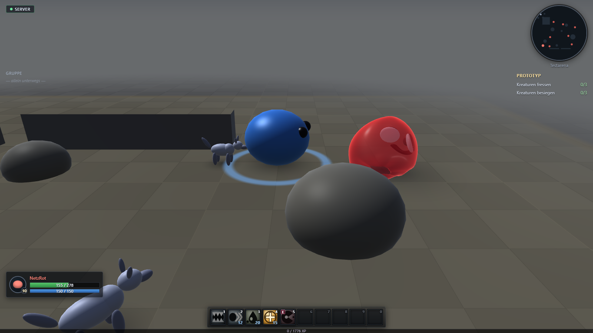
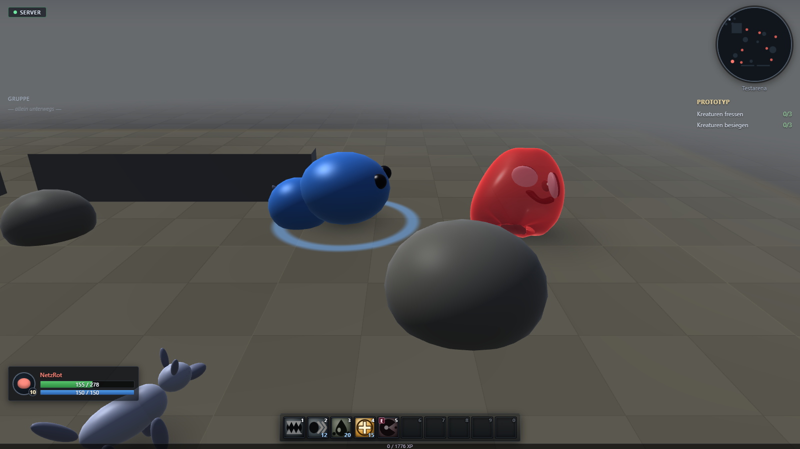
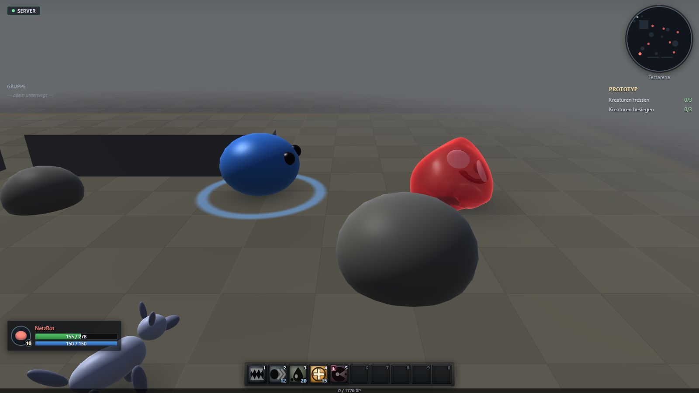

Fressversuch — vom Server entschieden, von beiden Clients gesehen
NetzBlau (Level 10) frisst einen Wolf auf Level 1 — nach GDD 01 §25 der Fall mit 100 % Chance, gewuerfelt hat trotzdem der Server. Beide Clients blicken mit identisch gesetzter, fest stehender Kamera auf dieselbe Stelle; die drei Spalten sind dieselben drei Augenblicke, jeweils in einem Zug von beiden Bildschirmen genommen.
Aufgenommen 2026-08-19 05:07:49 · Aufloesung 1600 × 900 je Client · Server ws://127.0.0.1:54603 (Startwert 4242) · Bildpaare 1573 / 1695 / 1629 ms Spanne
Client 1 — NetzBlauvorher: Ziel gewaehlt

Wolf · Lv 112/34 HP
NetzBlau · Lv 10eigener Schleim
NetzRot · Lv 10fremder Schleim (vom Server)
Phase: freiZiel Nr. 9 in der Welt dieses Clients: ja (12/34 HP)NetzBlau: Level 10 · 0/1776 XP
Client 1 — NetzBlauwaehrend: Umschlingen

Wolf · Lv 112/34 HP
NetzBlau · Lv 10eigener Schleim
NetzRot · Lv 10fremder Schleim (vom Server)
Phase: fressen / umschlingenZiel Nr. 9 in der Welt dieses Clients: ja (12/34 HP)NetzBlau: Level 10 · 0/1776 XP
Client 1 — NetzBlaunachher: Gegner weg

NetzBlau · Lv 10eigener Schleim
NetzRot · Lv 10fremder Schleim (vom Server)
Phase: freiZiel Nr. 9 in der Welt dieses Clients: neinNetzBlau: Level 10 · 49/1776 XPServerurteil: Chance 100.0 %, Wurf 0.357251, Wurf-Nr. 0 — Erfolg
Client 2 — NetzRotvorher (Zuschauer)

Wolf · Lv 112/34 HP
NetzRot · Lv 10eigener Schleim
NetzBlau · Lv 10fremder Schleim (vom Server)
Phase: freiZiel Nr. 9 in der Welt dieses Clients: ja (12/34 HP)NetzRot: Level 10 · 0/1776 XP
Client 2 — NetzRotwaehrend (Zuschauer)

Wolf · Lv 112/34 HP
NetzRot · Lv 10eigener Schleim
NetzBlau · Lv 10fremder Schleim (vom Server)
Phase: freiZiel Nr. 9 in der Welt dieses Clients: ja (12/34 HP)NetzRot: Level 10 · 0/1776 XP
Client 2 — NetzRotnachher (Zuschauer)

NetzRot · Lv 10eigener Schleim
NetzBlau · Lv 10fremder Schleim (vom Server)
Phase: freiZiel Nr. 9 in der Welt dieses Clients: neinNetzRot: Level 10 · 0/1776 XP